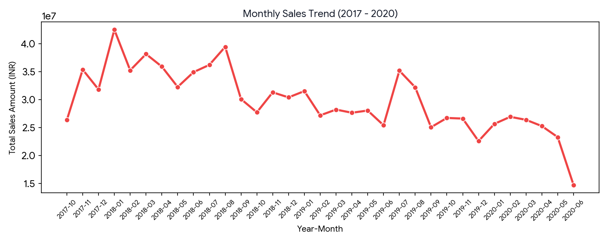
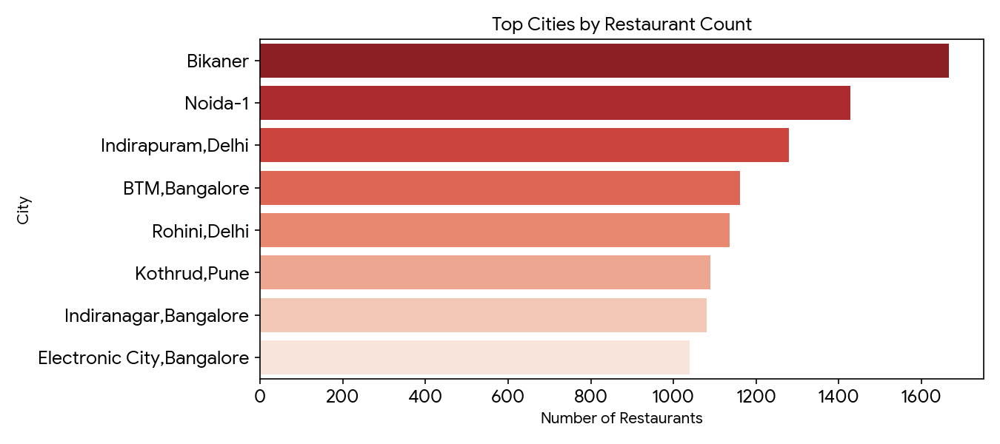
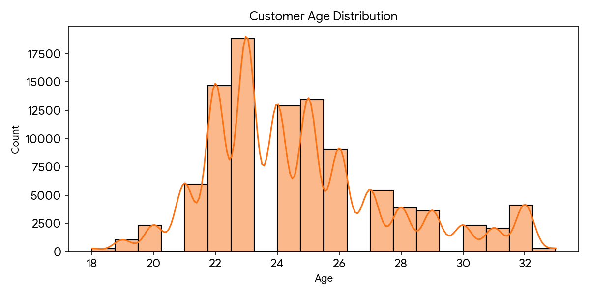

Comprehensive restaurant demand, sales trends, and customer demographic metrics
Tracking macroeconomic order volume and gross revenue fluctuations over time (2017–2020).

Highlighting primary culinary hubs with the highest density of registered food partners.

Demographic distribution illustrating peak ordering age brackets (concentrated heavily among 21–26-year-olds).

Summary of Findings Derived from Orders & Customer Datasets: